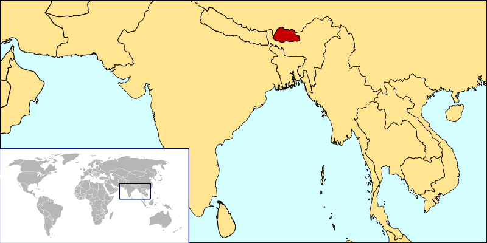

Trong thế giới mà gần như tất cả nhà lãnh đạo đều tìm cách gia tăng sự giàu có của quốc gia mình, có một đất nước đi theo một con đường hoàn toàn khác: Bhutan  Vị trí Bhutan trên bản đồ thế giớiĐây là quốc gia duy nhất trên thế giới tính toán mức độ thịnh vượng của đất nước dựa trên mức độ hạnh phúc của người dân. Chỉ số GNP (tạm gọi “tổng hạnh phúc quốc dân”) là một ý tưởng lớn xuất phát từ một quốc gia nhỏ- Bhutan. Đây là quốc gia duy nhất trên thế giới tính toán mức độ thịnh vượng của đất nước dựa trên mức độ hạnh phúc của người dân, chứ không phải dựa trên chỉ số GDP – tổng sản lượng nội địa. Ý tưởng của Bhutan từng một thời khiến cả thế giới phải nhắc đến quốc gia Châu Á bé nhỏ này. Bhutan hiện đang nổi lên trong lĩnh vực du lịch như một quốc gia Phật giáo đầy bí ẩn. Họ không đẩy mạnh phát triển công nghiệp, thay vào đó, họ duy trì cuộc sống thanh bình, chậm rãi của người dân, không “đô thị hóa”, không “hiện đại hóa”… Bhutan chú trọng phát triển dịch vụ du lịch nhưng với một mức giá cao để đảm bảo du lịch có thể hỗ trợ cho sự phát triển của Bhutan, đồng thời, giúp hạn chế lượng khách đổ về Bhutan, có thể gây khó khăn cho việc bảo vệ thiên nhiên và giữ gìn bản sắc của họ. Tu viện phật giáo nổi tiếng Takstang, nằm cheo leo trên sườn dãy Himalaya Khi đến Bhutan, người ta sẽ không thấy nhiều biển hiệu quảng cáo mà thay vào đó là những câu khẩu hiện hẳn sẽ khiến nhiều du khách mỉm cười, chẳng hạn “Cuộc sống là một cuộc hành trình! Hãy lên đường!”, “Hãy để thiên nhiên dẫn đường chỉ lối!” hoặc “Rất xin lỗi nếu có bất cứ sự bất tiện nào!”… Chỉ số GNP của Bhutan được hiện thực hóa trong từng chi tiết nhỏ của đời sống, họ hy vọng những du khách đặt chân đến Bhutan cũng có thể được hưởng sự hạnh phúc, dễ chịu trong cuộc sống của những người dân nơi vương quốc xa xôi, bí ẩn này. Bhutan là quốc gia của những đền đài, tu viện cổ xưa. Người dân nơi đây là những tín đồ trung thành của Phật giáo, đi đến đâu, bạn cũng sẽ thấy cờ phướn của nhà Phật tung bay, khung cảnh thiên nhiên hùng vĩ không hề bị tác động bởi bàn tay con người. Bhutan mới chỉ bắt đầu mở cửa từ cách đây 40 năm nhưng nhanh chóng, quốc gia này đã định hướng được lối đi cho mình khiến nhiều quốc gia phương Tây phải chú ý. Kể từ năm 1971, Bhutan đã loại bỏ chỉ số GDP (tổng sản lượng nội địa) và thay thế bằng một chỉ số mới – GNH (tổng hạnh phúc quốc dân), theo đó, đời sống tinh thần – thể chất, văn hóa – xã hội của người dân, việc bảo vệ tài nguyên – môi trường của quốc gia… được đưa lên ưu tiên số một. Trong ba thập kỷ qua, Bhutan đã đề ra một quan điểm đi đầu thế giới rằng sự hạnh phúc, khỏe mạnh của người dân quan trọng hơn sự phát triển kinh tế. Đây được xem là một hướng đi độc đáo. Giờ đây, khi thế giới lao đao trước những cơn khủng hoảng kinh tế, trước tình trạng thiên nhiên bị hủy hoại, khí hậu nóng lên… thì riêng một mình quốc gia bé nhỏ Bhutan lại ngày càng nổi lên như một quốc gia thịnh vượng, đã định hướng được cách phát triển bền vững, lâu dài và hiệu quả. Những thành tựu đáng kinh ngạc của Bhutan là minh chứng cho điều đó. Trong vòng 20 năm, tuổi thọ trung bình của người dân Bhutan được tăng gấp đôi, 100% trẻ em được tới trường, mức độ trong lành của môi trường ở mức lý tưởng, thiên nhiên được bảo vệ tối đa, 60% diện tích quốc gia được che phủ bởi rừng… Bhutan cấm việc xuất khẩu gỗ, mỗi tháng đều có một ngày toàn dân đi bộ… Bộ trưởng Giáo dục Bhutan – ông Thakur Singh Powdyel từng phát biểu: “Phá rừng phá biển để làm giàu thì quá dễ, ở Bhutan, chúng tôi tin rằng đó không phải là cách để thịnh vượng dài lâu. Chỉ có cách bảo vệ thiên nhiên – môi trường, chăm sóc cho chất lượng cuộc sống người dân thì một quốc gia mới thực sự được coi là phát triển”. Ông Powdyel cho biết thêm: “Thế giới thường hiểu nhầm chỉ số GNH của Bhutan. Người ta luôn hỏi làm thế nào mà đất nước các anh lại có được một dân tộc hạnh phúc? Thực tế GNH là một lý tưởng dẫn đường, là đích đến của mọi chính sách, để đất nước chúng tôi có thể phát triển bền vững”. Ở các trường học ở Bhutan, học sinh được định hướng giáo dục theo chuẩn “nhà trường xanh”. Bên cạnh việc học các môn cơ bản, các em được học cách làm nghề nông, cách sống thân thiện với môi trường, chính các em sẽ tham gia phân loại và tái chế rác của nhà trường mình. Ngoài ra, mỗi ngày đến lớp đều có một khoảng thời gian để cô trò cùng ngồi thiền. Chuông báo hết tiết là những đoạn nhạc du dương giúp người nghe thư giãn. Giáo dục Bhutan không đặt nặng việc các em phải là những học sinh giỏi, họ muốn các em sẽ là những công dân tốt. Tại thời điểm này, Bhutan đang chuẩn bị tiến hành tính toán chỉ số GNH của năm 2014. Năm nay, Bhutan sẽ mời các chuyên gia Nhật Bản sang cùng tiến hành công việc để minh chứng cho sự chính xác của chỉ số GNH tại đây. Chỉ số GNH của Bhutan đang ngày càng thu hút sự quan tâm và khen ngợi của dư luận quốc tế, ngày càng có nhiều học giả từ khắp nơi trên thế giới tìm hiểu, phân tích về chiến lược phát triển của vương quốc bé nhỏ nằm trong dãy Himalaya – đất nước Bhutan. - Nguồn: tgm.vn
vì sao bạn nghĩ kích thước là vấn đề? theo mình thì tư tưởng mới chính là yếu tố quyết định. có lẽ chính thái độ trân trọng hạnh phúc thực sự của phật giáo mà đất nước này đi 1 con đường khác đến vậy.